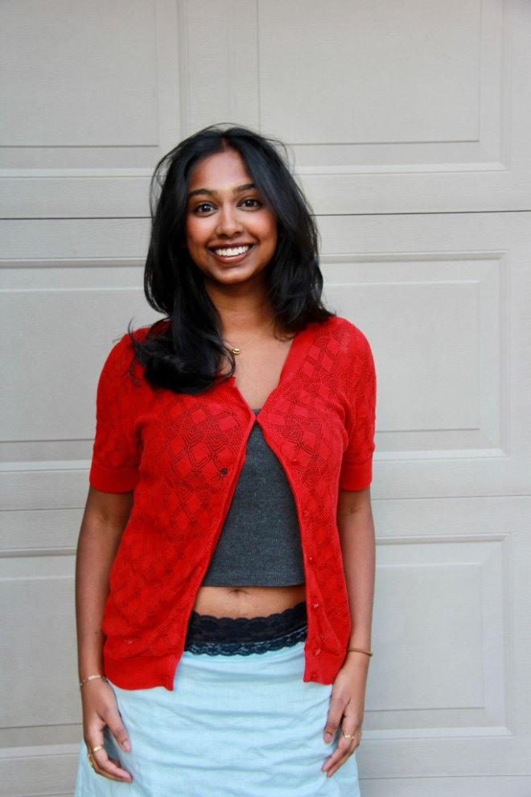

VANDHANA PURUSHOTHAMAN

I’m a data-driven storyteller & Michigan Ross graduate with concentrations in Strategy and Mathematics.
Outside of strategy, I love literary non-fiction, mental math games, and Succession.
✸Currently: reading Chip War by Chris Miller and Lonely City by Olivia Laing.
-
✸
Led a team of 6 to identify a $2M revenue opportunity through a Python-based dynamic pricing model for a $20M baseball franchise
Click to expand ↓We started with historical sales data -- cleaning and structuring it in SQL, then clustering seating sections by demand trends and proximity to amenities. From there we built a logistic regression in Python to calculate price elasticities across different game scenarios: prime infield seats on summer weekends could support a premium, outfield sections on weekday games needed discounts to drive attendance and pull concession revenue with it.
My job as PM was to make sure the client could actually act on what we built; translating regression outputs into pricing logic a non-technical front office could use, and running weekly calls to incorporate their feedback in real time.
-
✸
Used SQL + regression analysis on 6M+ data points to build a ZIP-code ranking model to redirect food resources to high-need communities
Click to expand ↓Working from 6M+ data points across demographic, economic, and internal distribution records, I used SQL to clean and validate inconsistently reported metrics across sites, then ran regression analysis to identify which factors actually predicted insecurity at the ZIP code level.
The core problem was that existing food insecurity models were built on income data, which misses entire categories of need. Families just above the food stamp eligibility threshold don’t show up as vulnerable. Neither do communities where a grocery store technically exists but nobody can get to it without a car.
I engineered two custom metrics to capture what standard models were missing: a Grocery Gap score quantifying physical access to food, and a Dependent Ratio for households under economic strain that income thresholds couldn’t see. Those fed into a composite ZIP-code ranking weighted by the regression outputs.
The final deliverable was an interactive Tableau dashboard the client could use to explore need by zip code, which ultimately guided the redistribution of 3M+ pounds of food.
-
✸
Developed executive-facing market sizing and competitive analyses for a Series D safety tech company
Click to expand ↓RapidSOS is a safety tech company that connects emergency call data across 911 systems, corporate security teams, and first responders, building a unified picture of what’s happening during a crisis so response is faster and more coordinated.
I was brought in to help launch a pilot with a major enterprise client, but there was a threshold problem: what does success actually look like? We needed a framework rigorous enough to evaluate outcomes across three months, where the stakes were genuine: response times, lives potentially affected, dollars saved.
I spent the summer in discovery interviews with the people the product was built for: security leads managing corporate emergencies, operations teams coordinating across sites, and first responders in the field. I wasn’t just collecting feedback. I was mapping the workflows that emergency routing had to actually fit into. That qualitative data became the foundation for building out KPI and ROI metrics: tiered product definitions, life-outcome indicators tied to response speed, and financial benchmarks that clarified whether the pilot had worked.
-
✸
Classified 6,500+ songs by lyrical mode using a philosophical framework; built D3.js visualization
Click to expand ↓I wanted to know whether the way songs relate to time — not their tempo, but their psychological orientation toward it — had shifted across six decades of popular music. To find out, I needed a classification system.
I built one anchored in philosopher Kieran Setiya’s framework of telic and atelic activities: songs that dwell in a moment, songs that move toward an endpoint, songs that simply narrate. I classified 6,500+ songs from the Rolling Stone 500 using that lens, then built a D3.js visualization to map how the distribution has shifted over time.
The project lives on my Substack as a longform data essay.
-
✸
Built AI-driven marketing automations and creator outreach systems for an indie label
Click to expand ↓Rebellion’s creator outreach was entirely manual — one email at a time, no tracking, no scale. I built the infrastructure to change that.
The system I shipped scraped TikTok for creators matching specific criteria, sent outreach automatically, and routed responses to an LLM that negotiated on the label’s behalf within pricing constraints I’d set. Closed deals were compiled into a daily digest sent directly to the CEO for one-batch approval. We went from roughly 200 manual outreach attempts per week to 2,000+ automated touchpoints.
I also built an auto-updating release tracker in Google Apps Script — pulling from internal PM software and giving artists direct visibility into their release progress — which cut update calls in half.